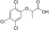

silvex

Has synonym(s): fenoprop
Definition: Fenoprop, also called 2,4,5-TP, is the organic compound 2-(2,4,5-trichlorophenoxy)propionic acid. It is a phenoxy herbicide and a plant growth regulator, an analog of 2,4,5-T in which the latter's acetic acid sidechain is replaced with a propionate group (with an extra CH3). The addition of this extra methyl group creates a chiral centre in the molecule and useful biological activity is found only in the (2R)-isomer. The compound's mechanism of action is to mimic the growth hormone indoleacetic acid (IAA). When sprayed on plants it induces rapid, uncontrolled growth. As with 2,4,5-T, fenoprop is toxic to shrubs and trees.
Source: Wikipedia
Wikipedia Page (Something wrong with this association? Let us know.)
Wikidata Page (Something wrong with this association? Let us know.)